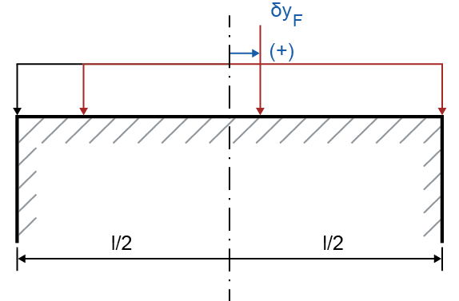
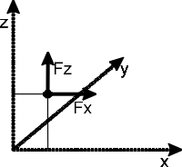
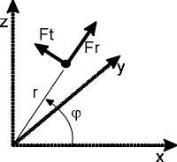

|
|
|


力
力可以定位在轴上的任何点，甚至在轴之外(!)。有多种方法可用于定义传力元件（如齿轮）甚至单个力。在大多数力元件中，扭矩方向通过将它们设置为 或 来定义。设置 表示轴是驱动元件，或者力矩与旋转方向相反（参见"旋转方向"章）。
关于部分元件的说明：
圆柱齿轮
接触位置： 如果您输入与其他齿轮的接触位置，力将施加在该点。与其简单地输入分度圆直径和名义压力角，不如输入工作节圆直径和工作压力角，这样可以得到更准确的结果。然后，单击“转换”按钮来计算这些值。
如果啮合类型设置为"多重啮合"，您可以在同一个圆柱齿轮元件上模拟多个啮合。然后，您必须为每个啮合定义位置、有效工作节圆直径和载荷施加长度。系统将根据这些数据自动得出工作压力角和螺旋角。
默认情况下，载荷施加的中心点是齿轮中心。该中心点可通过定义载荷施加位置偏移 δyF 来更改，公式如下：

原始齿轮载荷施加起始位置：L0 =齿轮中部 - (齿宽/2)
齿轮上载荷施加的原始结束位置：R0 =齿轮中部 - (齿宽/2)
*如果 δyF > 0
齿轮上载荷施加的新起始位置：L1 = L0 + 2 * δyF
齿轮上载荷施加的新结束位置：R1 = R0
*如果 δyF < 0
齿轮上载荷施加的新起始位置：L1 = L0
齿轮上载荷施加的新结束位置：R1 = R0 + 2 * δyF
这些计算只有在计算设置中选择了相应选项时才有效。对所有齿轮元件使用相同的过程。
非对称圆柱齿轮
您可以通过在齿轮几何中选择 来定义非对称圆柱齿轮。如果选择此选项，您必须输入法向截面上的两个工作压力角，一个用于左齿面，一个用于右齿面。然后根据旋转方向（顺时针或逆时针）和方向（驱动或从动）确定工作齿面。根据定义的是哪个工作齿面，使用左齿面或右齿面的工作压力角进行计算。如果链接了圆柱齿轮副文件，这也同样适用。
考虑刚度矩阵： 如果选中此复选框，则会考虑所连接的齿轮计算中存在的任何齿轮体定义。仅使用在 选项中所选齿轮的齿轮体。请注意，齿轮体的刚度矩阵不用于标准轴计算，即它不会改变轴的刚度。
锥齿轮
啮合位置：参见圆柱齿轮。
锥齿轮的位置可以使用锥齿轮数据进行转换。定位的参考点是节锥上锥齿轮宽度的中部。锥齿轮位置可以使用轴上轴线交点的位置和其他锥齿轮数据进行转换。
ISO 23509:2016 附录 D 中的公式用于确定轴计算中锥齿轮的轴向力和径向力。
在计算准双曲面齿轮时，会考虑由于摩擦产生的附加力分量。相应的摩擦系数 μ 可以在模块特定设置中定义。
如果啮合类型设置为"多重啮合"，您可以在同一个锥齿轮元件上模拟多个啮合。
面齿轮
面齿轮的节锥角始终设置为 90°（此输入无法更改）。
蜗杆
接触位置：参见圆柱齿轮。蜗杆通常是驱动元件。其效率包含在力分量的计算中。
如果蜗杆数据从 Z80 文件读取，请在蜗轮蜗杆计算中的 的 选项卡中选择 选项。这确保了轴计算中的径向力与蜗轮蜗杆计算中的径向力相匹配（参见"使用替代公式计算（不同于标准）"章）。
蜗轮
接触位置：参见圆柱齿轮。蜗轮通常是从动元件。其效率包含在力分量的计算中。
带轮
绳轮方向：输入合成带力的方向（参见图 25.7）
螺旋角的方向和元件的位置定义如下（参见图 25.1）。

图 25.1：用于定义力元件的方向
偏心力


图 25.2：偏心力的笛卡尔/极坐标
您可以用笛卡尔坐标或极坐标输入偏心力的值（参见图 25.2）。您可以在轴编辑器中的 界面更改坐标系。
从齿轮计算传输数据
在 中，您可以从齿轮计算文件导入用于定义直齿轮和锥齿轮的数据。在元素树中选择所需元素，然后选中 复选框。然后选择齿轮编号（1 到 4）。与这些齿轮副相关的数据随后被直接导入。在这种情况下，使用节点处的数据而不是分度圆处的数据。
重要提示：如果此输入窗口中的 选项保持选中状态，则每次调用轴计算功能时都会从齿轮计算重新导入数据。如果您之后更改齿轮数据，新数据将自动随之传输！但是，如果您只想导入一次此数据，请在导入数据后再次取消选中此选项。
Forces
Forces can be positioned at any point on the shaft, even outside(!) the shaft. Different methods are available for defining force-transmitting elements (such as gears) or even individual forces. In most force elements, the torque direction is defined by setting them as or . The setting means that the shaft is the driving element or that the moment is counter to the sense of rotation (see chapter Direction of rotation).
Comments about some of the elements:
Cylindrical gear
Position of contact: If you enter the position of contact with the other gear, forces are applied at this point. Instead of simply entering the reference diameter, you get a more accurate result if you enter the operating pitch diameter and the operating pressure angle instead of the nominal pressure angle. Then click the Convert button to calculate these values.
If the meshing type is set to "Multiple meshing", you can model several meshings on the same cylindrical gear element. You must then define the position, the active operating pitch diameter and the length of load application for each meshing. The resulting working pressure angle and helix angle are then determined automatically from this data.
By default, the center point for load application is the center of the gear. This can be changed by defining the load application position offset δyF, according to the following formulae:
original starting position of gear load application: L0 = middle of the gear - (gear width/2)
Original final position of the load application on the gear: R0 = middle of the gear - (gear width/2)
*If δyF > 0
New starting position of the load application on the gear: L1 = L0 + 2 * δyF
New final position of the load application on the gear: R1 = R0
*If δyF < 0
New starting position of the load application on the gear: L1 = L0
New final position of the load application on the gear: R1 = R0 + 2 * δyF
These calculations are only valid if the corresponding option has been selected in the calculation settings. Use the same process for all the gear elements.
Asymmetric cylindrical gear
You can define asymmetric cylindrical gears by selecting for the Gear geometry. If you select this option, you must enter two working pressure angles at normal section, one for the left flank and one for the right flank. The working flank is then determined, depending on the sense of rotation (clockwise or counter clockwise) and direction (driving or driven). Depending on which working flank is defined, either the working pressure angle for the left or the right flank is used for the calculation. This also works if a cylindrical gear pair file is linked.
Take stiffness matrix into account: If this checkbox is selected, any gear body definition present in the connected gear calculation is taken into account. Only the gear body of the gear selected in the option is used. Note that the gear body's stiffness matrix is not used in the standard shaft calculation, i.e. that it doesn't change the shaft stiffness.
Bevel gear
Meshing position: see Cylindrical gear.
The bevel gear's position can be converted using the bevel gear data. The reference point for positioning is the middle of the bevel gear width on the pitch cone. The bevel gear position can be converted using the axis crossing point position on the shaft and other bevel gear data.
The formulae in ISO 23509:2016, Annex D, are used to determine the axial and radial forces for bevel gears in the shaft calculation.
An additional force component due to friction is taken into account when calculating hypoid gears. The corresponding coefficient of friction μ can be defined in the module specific settings.
If the meshing type is set to "Multiple meshing", you can model several meshings on the same cylindrical gear element.
Face gear
The pitch angle for face gears is always set to 90° (this input cannot be changed).
Worm
Position of contact: see Cylindrical gear. A worm is usually a driving element. Its efficiency is included in the calculation of force components.
If the worm data is read from a Z80 file, select the option in the , in the tab, in the worm gear calculation. This ensures that the radial forces in the shaft calculation match up with the radial forces in the worm gear calculation (see chapter Calculating with alternative formulae (differs from standard)).
Worm wheel
Position of contact: see Cylindrical gear. The worm wheel is usually driven. Its efficiency is included in the calculation of force components.
Pulley
Direction of rope sheave: Input the direction of the resulting belt forces (see Figure 25.7)
The direction of the helix angles and the positions of the elements are defined below (see Figure 25.1).
Figure 25.1: For defining the direction for force elements
Eccentric force
Figure 25.2: Cartesian/polar coordinates for eccentric force
You can enter values for eccentric force either in Cartesian or polar coordinates (see Figure 25.2). You can change the coordinates system in the screen in the Shaft Editor.
Transferring data from gear calculation
In the , you can import the data used to define spur and bevel gears from a gear calculation file. Select the element you require in the Element Tree and then click on the checkbox. Then select the gear number (1 to 4). The data relevant to these gear pairs is then imported directly. In this situation, the data at the pitch point is used instead of the data at the reference circle.
Important: If the option in this input window remains selected, data will be reimported from the gear calculation every time you call the shaft calculation function. If you then change the gear data later on, the new data will automatically be transferred with it! However, if you only want to import this data once, deactivate this option again once you have imported your data.